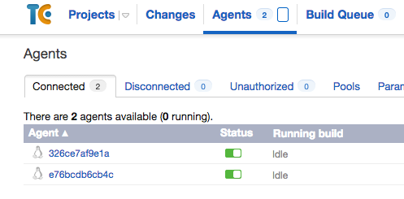

TeamCity from JetBrains is my favorite build server. It “knows” what developers need, it simply works out-of-the-box instead of you spending time making it to work. There is an option to get it installed quickly with trial installation topology, when both server and single agent run on the same box. However it is preferable to isolate them from each other.
TeamCity Farm is a Maven project, which results in ZIP-archive with Vagrant project. The later
The created Centos VM and installed Docker repeat your network proxy settings. Therefore you can use the project behind the company firewall
Final result: Ready for use TeamCity build server becomes available on your machine at http://localhost:8112/
Get Vagrant project
You can either download the released project using a button on the right or get sources and run Maven. The sources can be downloaded using a button on the right or, to get latest sources from GitHub, clone the repository
git clone https://github.com/JV-ration/teamcity-farm.git
cd teamcity-farm
Then change to the directory with unpacked sources and
mvn clean package
The line above will prepare ZIP file with Vagrant project in target folder.
The line below will even unpack the ZIP in target/its/team-city-farm-0.0.2-SNAPSHOT folder
mvn clean pre-integration-test -Prun-its
Create and run VM
Unpack the archive with Vagrant project and change to that directory Run the command below to create VM and prepare the build server
bin/vagrant/vagrant-up.sh vagrant.lck
Finish configuration of the build server
When VM is fully provisioned
Happy Building ;-)
